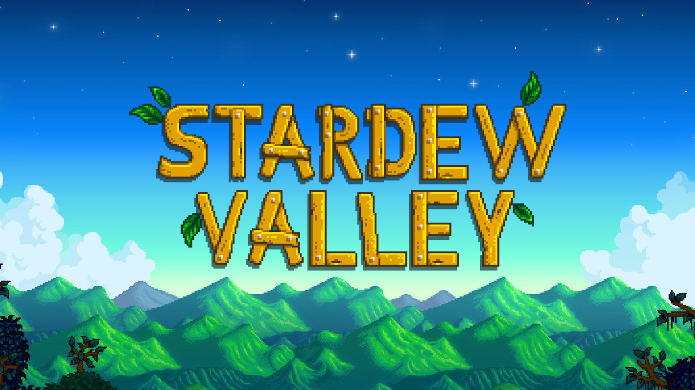

Retrospectiva săptămânii 29 iulie - 4 august 2018
Retrospectiva săptămânii este rubrica duminicală în care trecem în revistă evenimentele săptămânii de pe frontul de gaming: știri şi articole (scrise de alții, bineînțeles, că e mai ușor aşa), industrie, lansări, oferte de jocuri, toate numai de savurat la cafeaua de duminică dimineața. (Și la care oricine poate contribui. 1 )
Ştiri
- Un youtuber susține că Valve ar putea reintroduce flash sales pe Steam, cu durate care ar putea varia între 6 și 12 ore, în funcție de cum doresc producătorii (ValveNews, PC Gamer)
- Valve retrage de pe Steam un joc care aparent mina criptomonede şi genera obiecte aproape identice cu cele găsite în alte jocuri, dar cu valoare mare pe Steam Market, ce puteau fi astfel folosite pentru scamming (Ars Technica, Games Informer, Eurogamer, PC Gamer). Un alt joc, care “doar” genera obiecte pentru scamming, a fost de asemenea eliminat (PC Gamer)
- Versiunea de Android a Fortnite nu va fi disponibilă pe Play Store. Epic vor să evite astfel comisionul de 30% pe care îl percepe Google şi vor distribui jocul de pe site-ul propriu, cu instrucțiunile aferente pentru ca jucătorii să-și poată descărca și instala singuri APK-ul, ocolind sistemul de securitate al telefonului (GamesIndustry.biz, Eurogamer)
- Unul dintre scenariștii Portal 2 se întoarce la Valve, la un an după ce părăsise compania (PC Gamer)
- Octopath Traveller a atins pragul de peste 1 milion de copii vândute, la mai puțin de o lună de la lansare (Twitter Nintendo Europe, VG247)
- Elon Musk introduce câteva jocuri Atari într-un update pentru software-ul mașinilor Tesla, dar vrea să dezvolte și jocuri originale: (Eurogamer, Ars Technica, GamesIndustry.biz)
- Capcom plănuiesc să facă mai multe remasterizări ale jocurilor vechi, după Resident Evil 2 (Games Informer)
Articole (critică, dev, design)
- How Hackers Are Preserving Gaming History (Games Informer)
- How Often Do You Re-Roll In Games? (Waypoint)
- Anatomy of a tabloid Fortnite front page story (Eurogamer)
- RPG Maker and the value of the video game construction set (Gamasutra)
- What Men and Women Consider Hardcore Gaming Are Not The Same (Gamasutra)
- Story Analysis - o serie de articole de pe Gamasutra despre jocurile story-based:
- The future of immersive sims (PC Gamer)
- How games are built and rebuilt for conventions (PC Gamer)
- The allure of Viking fantasies, and the games that cherry-pick them (RPS)
- Modern Life, Self-Improvement and Celeste (Kotaku)
- How to Nail Nostalgia in a Video Game, Without Getting Trapped By It (Kotaku)
- O serie de articole pe Polygon despre backlog-urile noastre cele de toate zilele. Câteva sugestii:
- Chill out: a new wave of relaxing video games shows there’s more to them than violence (The Guardian)
- Why did licensed games get better? (GamesIndustry.biz)
- How a blind 'Call of Duty' player is racking up thousands of kills (Engadget)
Not-a-review
- (No Man’s Sky) The Two No Man’s Skys (Kotaku)
- (Dead Cells) How player criticism helped make Dead Cells the game it is today (Gamasutra)
- (Hero-U) How Hero-U avoided disaster to resurrect ‘90s adventure game nostalgia (PC Gamer)
- (Blacksad) From panel to screen: cartoon cats and visual subjectivity in Blacksad (RPS)
- (Broken Sword 5) Bringing a classic adventure series to Switch (VentureBeat)
- (King of Dragon Pass, Six Ages) How Six Ages and King of Dragon Pass explore the politics of myth (RPS)
Vocea industriei
- Salem Al-Ghanim (Little Adventure on the Prairie): Developer Releases Vita Game With Easy Trophies So ‘A Lot Of People Buy It’ (Kotaku)
- Daniel Mullins (Pony Island): From failed Kickstarter to career-defining success: The story of Pony Island (GamesIndustry.biz)
Istorie
- Making the piracy problem worse (GamesIndustry.biz)
- The Californian sent to save Stalker: Shadow of Chernobyl from development hell (Eurogamer)
- Braid 10th anniversary Critical Compilation (Critical Distance)
Design, world-building
- Diegesis and designing for immersion (Gamasutra)
- The mind-bending science behind the planets of Elite Dangerous (PC Gamer)
- Designing NieR:Automata’s Machine Lifeforms (PlatinumGames Blog)
- The occult mechanics of Bloodborne, Cultist Simulator and Pyre (Eurogamer)
- What Works And Why: Emergence (Pentadact, blogul lui Tom Francis)
- The making of Pillars of Eternity 2: Deadfire’s greatest quest (PC Gamer)
- (Video) Watch a city planner employ eminent domain in SimCity 2000 (Destructoid)
- (Poze frumoase) The cyberpunk art of Benedykt Szneider gave Ruiner a brutal beauty (PC Gamer)
Made în România
- Trailer nou, dată de lansare și mențiuni pe diverse site-uri pentru Planet Alpha: Games Informer, Eurogamer, PC Gamer, Hardcore Gamer, Gamereactor
Anunţate
- Gloomhaven, adaptarea digitală a unui mega-popular boardgame (RPS, Eurogamer, PC Gamer)
- Godhood, un nou god game de la creatorii lui Reus (Eurogamer, RPS)
- The Procession To Calvary, o aventură comică cu personaje decupate din tablouri renascentiste (RPS)
- Shortest Trip to Earth, un simulator de nave spațiale având similarități cu FTL (Gamereactor)
- Edna & Harvey - The Breakout: 10th Anniversary (Gamereactor)
Acum cu dată de lansare
- Death’s Gambit: 14 august (PC Gamer)
- Donut County (sau “acel joc în care joci cu o gaură”): 28 august (Games Informer)
- Planet Alpha: 4 septembrie (Eurogamer)
- HEVN: 7 septembrie (PC Gamer)
- Artifact: 28 noiembrie (Eurogamer)
- The Sinking City: 21 martie 2019 (Gamereactor)
Lansate
- 30 iulie: La Mulana 2 (Steam)
- 31 iulie: Chasm (Steam)
- 31 iulie: This Is The Police 2 (Steam)
- 31 iulie: Forsaken Remastered (Steam, gog.com)
- 1 august: Yakuza 0 (Steam)
- 1 august: Star Traders: Frontiers (Steam)
- 1 august: Regular Human Basketball (Steam, Humble Store, itch.io)
- 2 august: Pillars of Eternity II: Beast of Winter (DLC) (Steam)
- 2 august: Grimmwood - They Come at Night (Steam)
Oferte jocuri
Humble Bundle
- A început un nou Humble Monthly, având ca early unlocks Sniper Elite 4, Tales of Berseria și Staxel. În premieră, dacă nu vă atrag aceste jocuri, puteți renunța la ele în schimbul altui early unlock: Rise of the Tomb Raider.
- Mai aveți timp până mâine să profitați de Indie Mega Week . Jocurile sunt numeroase, dar vă recomandăm SOMA (5,59€) , Hellblade: Senua's Sacrifice (17,99€) , Darkest Dungeon (6,89€) , Dead Cells (19,99€) , INSIDE (8,99€) , Ultimate General: Gettysburg (1,49€) , Grim Dawn (7,49€) sau Rocket League (11,99€)
- Pentru pasionații de sporturi s-a lansat Humble Sports Bundle. La pragul de minim 1$ puteți lua GRID 2, SEGA Bass Fishing și Eastside Hockey Manager. La pragul beat the average se adaugă Motorsport Manager, DiRT Rally, Superblood Hockey și un cupon de -75% pentru Football Manager 2018, iar de la 12$ mai primiți și F1 2017.
Steam
- Board Games Weekend; câteva recomandări: Small World 2 (3,99€) , Ticket to Ride (3,99€) , Race for the Galaxy (5,59€) , Twilight Struggle (3,99€) , The Warlock of Firetop Mountain (5,99€)
- Până la finalul zilei mai puteți încerca gratuit Absolver (14,99€) Jocul este redus la jumătate de preț până pe 10 august.
- Tot gratuit puteți încerca, de data asta până mâine, și jocurile produse de Amplitude Studios: Endless Space 2 (13,59€) , Endless Legend (7,49€) , Dungeon of the Endless (2,99€) și Endless Space - Collection (1,99€). Și acestea vin cu reduceri consistente în caz că vreți să le cumpărați.
gog.com
- Heroes of Might and Magic, Assassin's Creed and more: o mulțime de serii clasice sunt la reducere, precum Might and Magic, Rayman, Settlers, Far Cry, sau Prince of Persia.
- Promoția de weekend: S.T.A.L.K.E.R.: Call of Pripyat (4,89€) , S.T.A.L.K.E.R.: Clear Sky (2,49€) , S.T.A.L.K.E.R.: Shadow of Chernobyl (4,89€) , F.E.A.R. Platinum (2,09€) , F.E.A.R. 2: Project Origin + Reborn (3,09€) , Serious Sam: The First Encounter (0,99€) , Serious Sam: The Second Encounter (0,99€) și alte shootere.
Fanatical
Două bundle-uri merită atenția voastră:
- Fanatical Anthology Awesome Bundle, din care se remarcă Skulls of the Shogun, System Shock 2, Oknytt sau Crimsonland
- Fanatical Anthology Fantasy Bundle
Recomandarea săptămânii: Stardew Valley

Jocul perfect a devenit și mai bun! Odată cu lansarea ultimului patch pe 1 august, Stardew Valley are acum și multiplayer și e momentul perfect să-l (re)vizitați!
Pentru cei care nu știu, Stardew Valley e… greu de descris în doar câteva cuvinte. E un simulator de viață la țară, în care trebuie să te ocupi de ferma moștenită de la bunicul tău, dar totodată trebuie să ai grijă și de relația cu mica comunitate lângă care se află ferma. Personajul tău poate stabili relații de prietenie (sau chiar de căsătorie) cu personajele din orășel, se poate implica în restaurarea centrului cultural și de activități al orașului (prilej de multe quest-uri) și poate participa la numeroase festivități ce au loc periodic. În plus, există numeroase alte sisteme care se întrepătrund, rezultând un gameplay plin de activități și questuri, care pot da naștere la numeroase povești.
Cu toate acestea, obiectivele din joc nu sunt obligatorii, astfel încât jocul nu devine obositor sau copleșitor, ci doar relaxant sau, cel mult, stimulant. Singurul ritm care este impus jucătorului este dat de curgerea zilelor și a anotimpurilor, propriu vieții la fermă: micul tău fermier trebuie să aibă grijă de propria sănătate (să mănânce și să doarmă în fiecare zi); plantele și animalele trebuie îngrijite aproape în fiecare zi (asta însemnând udat, hrănit, recoltat, muls vaca, adunat ouă); roadele muncii trebuie valorificate (vândute în oraș sau prelucrate la fermă: murături, dulcețuri, bere, maioneză, etc); fiecare anotimp vine cu culturi și pomi fructiferi proprii; și așa mai departe.
Iar peste toate acestea, o mulțime de mici detalii îi dau o savoare nebănuită și un farmec aparte, ceea ce-l face greu de lăsat din mână odată ce te-ai apucat.
(Și un mic amănunt interesant: jocul e făcut aproape integral de o singură persoană.)
Jocul e extrem de accesibil și poate fi jucat de origine: “gameri înrăiți”, jucători casual, copii sau oricine altcineva care în mod obișnuit nu are treabă cu jocurile. Iar de acum, toate aceste activități pot fi experimentate împreună cu până la alți trei jucători. Ca atare, devine jocul ideal pentru un coop conjugal sau cu copiii. (Cristan)
Linkuri:
- Site oficial
- Cumpără: Steam, Humble Store, gog.com (chiar și la preț întreg, jocul e ieftin pentru ce oferă)
- Discuţii pe forum
- Dacă ai citit vreun articol sau vreo știre interesantă și crezi că merită inclusă în retrospectiva săptămânii, te așteptăm cu recomandarea ta pe forum, pe unul din topicurile dedicate: Știri, Articole, Gaming România, Oferte jocuri [return]